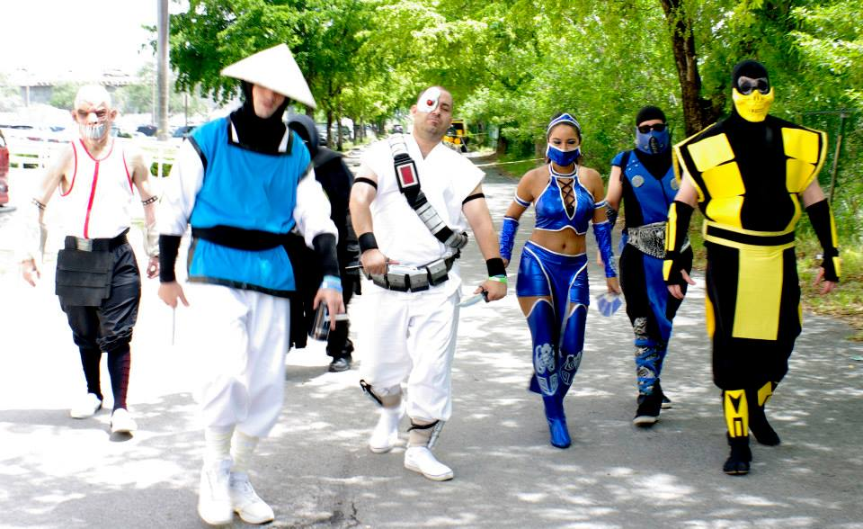
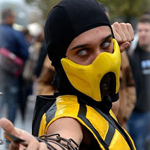
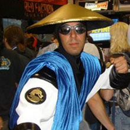
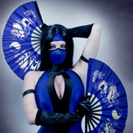
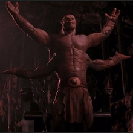
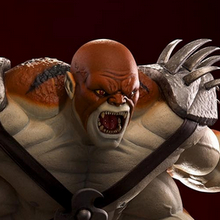
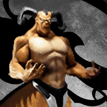
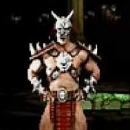
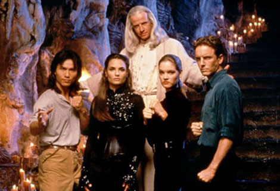
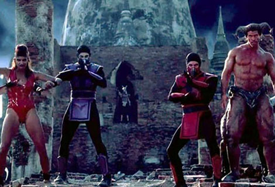

Mortal Kombat
El videojuego
En su momento atrajo mucha atención por lo sangriento y sus gráficos digitalizados. Cada luchador, de hecho, era un actor humano con sus movimientos recapturados e incorporados en el juego (este estilo gráfico vio su fin en MK4).
Esto fue porque los primeros videojuegos de Mortal Kombat surgieron mucho antes de la aparición de los gráficos en 3D de las consolas de videojuegos.
Los personajes
Cada luchador tiene su propia historia para participar en el torneo Mortal Kombat.
Cada uno tiene sus propios movimientos de pelea cuerpo a cuerpo, y algunos son capaces de utilizar energías especiales para atacar al oponente.
Otros tienen trucos especiales como armas, cuerdas, garras, etc.

- 
- 
- 
- 
- 
- 
- 
Existen algunos movimientos para rematar a los rivales a punto de ser noqueados, incluyen brutales descuartizamientos, decapitaciones, incineraciones, explosiones (y demás...).
Las mismas se llaman fatality, aunque en este terreno hay otras variedades, entre las que se encuentran:
- Animality:
- El vencedor se convierte en animal y elimina al contrincante.
- Multality:
- Consiste en una serie de movimientos que elimina a los oponentes que están alrededor de una sola vez.
- Babality:
- Convierte al contrincante en bebé.
- Friendship:
- Donde en vez de matar al oponente, le da un regalo, o hace alguna gracia.
- Brutality:
- Consiste en una salvaje paliza hasta que el oponente es desmembrado.
Los personajes son ya íconos de la cultura del videojuego, y se han adaptado historietas, series de televisión y películas sobre ellos.
La violencia
El juego muchas veces presenta sangre y movimientos brutales, esto ha causado muchos desagrados por parte de la gente, pero no por los videojugadores que han sido "enamoradados" por el juego.
La violencia ha sido un factor muy polémico en la serie de videojuegos.
Los creadores, John Tobias y Ed Boon, crearon Mortal Kombat con la finalidad de competir con la serie de videojuegos de Capcom Street Fighter, sin embargo el suyo resultó ser mucho más violento que los de Capcom, presentando mucha sangre y unos movimientos finales (fatality) que consistían en un desmembramiento o destrucción total o parcial del rival.
Este primer videojuego fue duramente censurado en especial por Nintendo, que eliminó la sangre y los fatalities en la versión de Super Nintendo para así evitar perder su imagen "familiar"; Sin embargo su rival Sega optó por no censurar la versión de Mega Drive y presentarlo en su versión original.
El juego causó un gran impacto por las familias norteamericanas y las agencias de videojuegos trataban de buscar una solución al problema, para ello crearon el sistema de clasificaciones ESRB que se encargaría de evaluar los juegos.
A lo largo de los años nunca se ha presentado una versión familiar del juego, eso fue hasta 2008 que se creó el videojuego Mortal Kombat vs. DC Universe que presentaba una versión menos violenta de Mortal Kombat. Este juego fue duramente criticado por los admiradores de la saga diciendo: Esto acaba de causar que la saga de MK perdiera su toque especial, sin embargo en 2011 se presentó el noveno videojuego que "recuperó su esencia".
Debido a que en la década de los noventas lanzar un juego como Mortal Kombat era considerado tabú, Nintendo optó por censurar la sangre y los fatalities dándole un tono similar al de Street Fighter, aunque su compañía rival Sega consideraba que no era mala opción lanzar el juego sin censura, pues mucha gente tenía curiosidad por conocer esta versión del juego, aunque cabe mencionar que para quitar la censura debía introducirse un código o truco. Esto llevó a que muchos jugadores prefirieran comprar la versión de Sega en lugar de la de Nintendo.
Debido a las estrictas leyes de Australia se optó por cancelar la distribución de videojuegos de Mortal Kombat en la región.
Warner Bros. trató de evitarlo pero no logró conseguirlo.
Mortal Kombat en el cine
-
Mortal Kombat 1 [1995]
Mortal Kombat -la película- vio la luz en 1995, dirigida por Paul Anderson.
La película tuvo criticas mixtas entre positivas y negativas, muchas de ellas vinieron de los fanáticos del juego y afirmaron que a pesar de las diferencias con la historia original, la película cumplió con su propósito que era de entretener ya que tenía buen reparto, buenos efectos especiales y la esencia de lo que representaba el videojuego.
Según la página Metacritics, la primerA película está valorada con un puntaje de 58/100.
En IMDB Tiene una puntación de 5 estrellas sobre 10.
Por otra parte, la página Rotten Tomattoes le otorga una efectividad de 36%. -
Mortal Kombat2 Aniquilación.
En el año 1997, se filmó una secuela llamada Mortal Kombat, Aniquilación.
La película, que contó con un presupuesto de 30 millones de dólares (la primera costó 20 nada más) ha sido calificada como una de las peores de la historia, culpa de unos FX realmente pobres, unos decorados poco imaginativos... y un guión sin gracia.
A pesar de lo desastroso de la cinta, en EEUU recaudó unos correctos 51 millones de dólares, que sumado al mercado internacional, la cifra final fue de unos nada despreciables 122 millones.